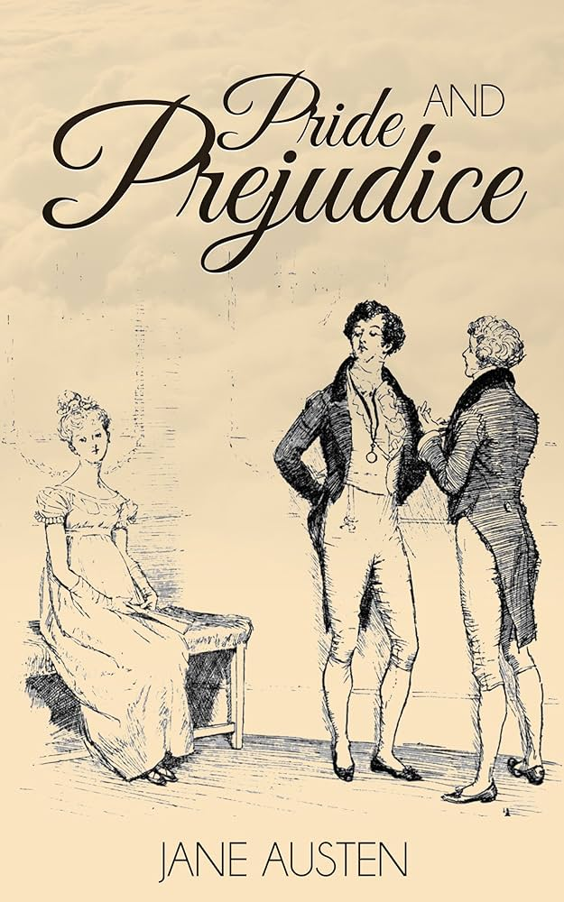
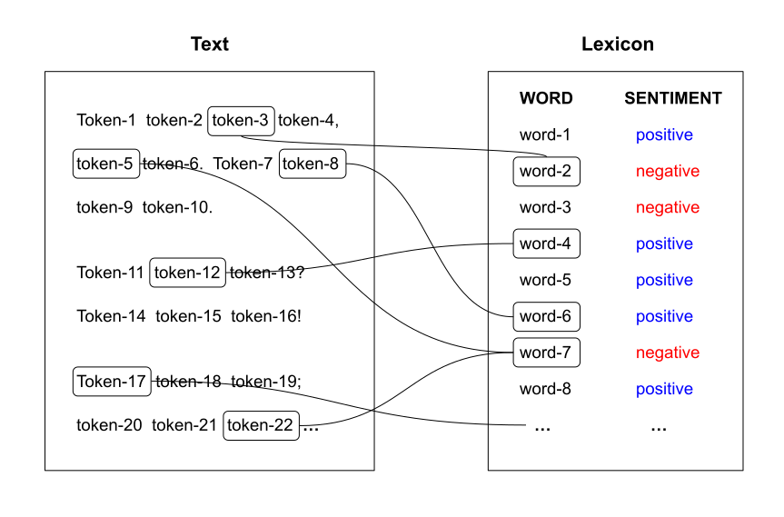
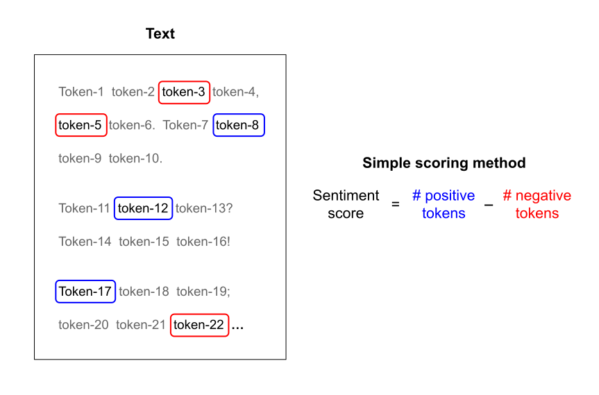
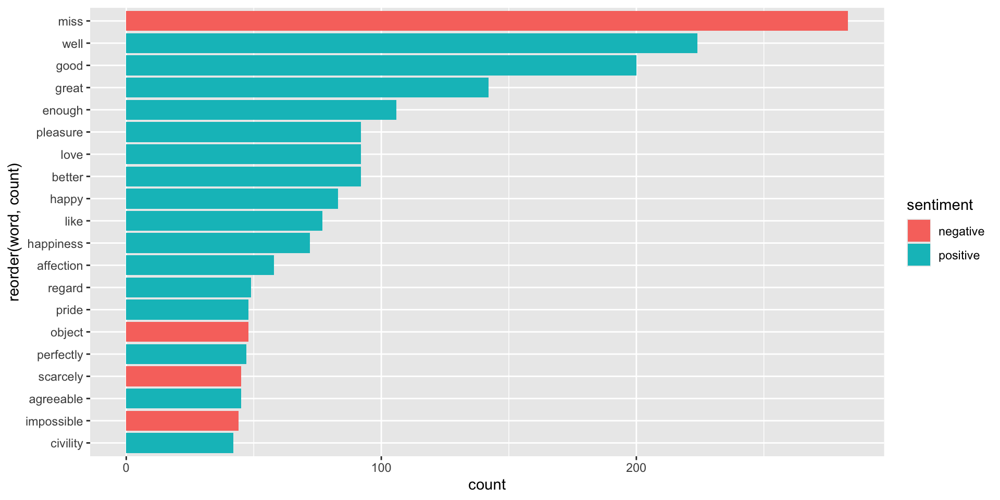
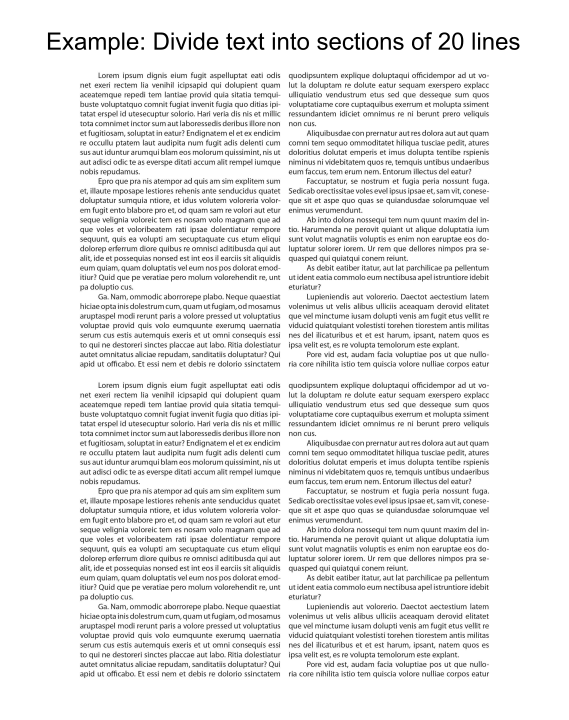
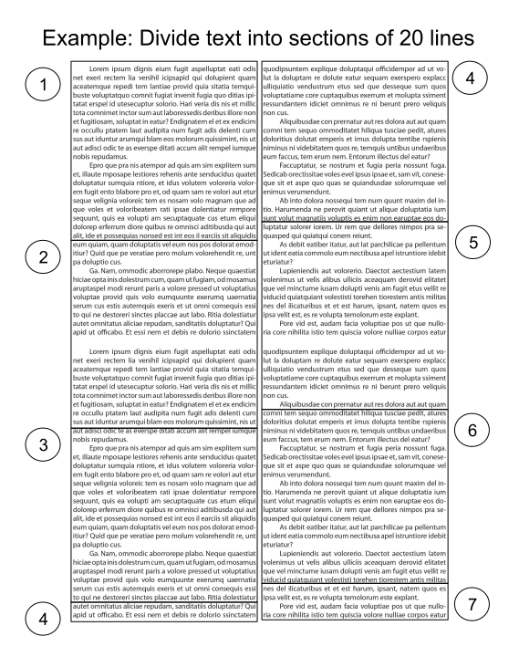
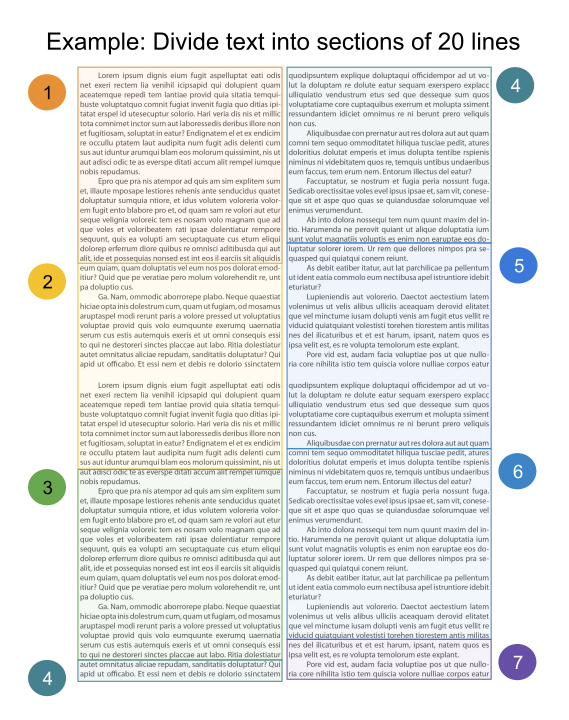
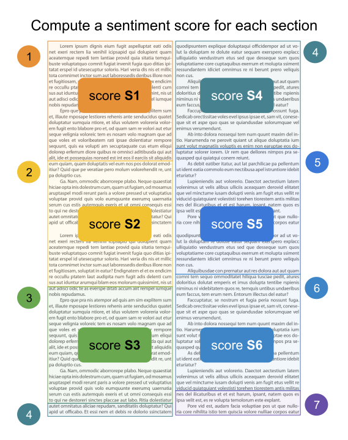
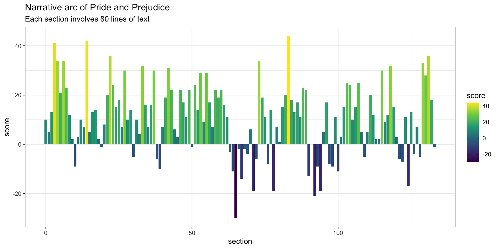

Text Analysis III
Text Mining
Analysis of Pride and Prejudice
Pride and Prejudice (Jane Austen, 1813)

- Questions:
What words are most commonly used?- What is the emotional arc of the novel?
- Steps:
- Access text as computer file
- Read into R
- Data cleaning
- Summary statistics
- Visualization
Last time …
We introduced the core ideas of Sentiment Analysis:
Consider the text as a combination of its individual words or tokens, and the sentiment of the whole text as the sum of the sentiment content of the individual words.





Sentiment lexicons
"bing": from Bing Liu; this lexicon1 categorizes words in a binary fashion into positive and negative categories."afinn": from Finn Arup Nielsen; this lexicon assigns words with a score that runs between -5 and 5, with negative scores indicating negative sentiment and positive scores indicating positive sentiment."nrc": from Saif Mohammad and Peter Turney; this lexicon categorizes words in a binary fashion ("yes"/"no") into categories of positive, negative, anger, anticipation, disgust, fear, joy, sadness, surprise, and trust."loughran": another lexicon somewhat similar to"afinn".
# A tibble: 8 × 2
word sentiment
<chr> <chr>
1 2-faces negative
2 abnormal negative
3 abolish negative
4 abominable negative
5 abominably negative
6 abominate negative
7 abomination negative
8 abort negative # A tibble: 8 × 2
word sentiment
<chr> <chr>
1 abandon negative
2 abandoned negative
3 abandoning negative
4 abandonment negative
5 abandonments negative
6 abandons negative
7 abdicated negative
8 abdicates negative Assigning sentiments to words
# A tibble: 8,704 × 2
word sentiment
<chr> <chr>
1 pride positive
2 prejudice negative
3 good positive
4 fortune positive
5 well positive
6 rightful positive
7 impatiently negative
8 objection negative
9 enough positive
10 fortune positive
# ℹ 8,694 more rows
Narrative Arc




# A tibble: 10,660 × 1
text
<chr>
1 "PRIDE AND PREJUDICE"
2 "By Jane Austen"
3 "It is a truth universally acknowledged, that a single man in possession"
4 "of a good fortune, must be in want of a wife."
5 "However little known the feelings or views of such a man may be on his"
6 "first entering a neighbourhood, this truth is so well fixed in the minds"
7 "of the surrounding families, that he is considered the rightful property"
8 "of some one or other of their daughters."
9 "\"My dear Mr. Bennet,\" said his lady to him one day, \"have you heard that"
10 "Netherfield Park is let at last?\""
# ℹ 10,650 more rows# A tibble: 10,660 × 3
text line_number section
<chr> <int> <dbl>
1 "PRIDE AND PREJUDICE" 1 0
2 "By Jane Austen" 2 0
3 "It is a truth universally acknowledged, that a single m… 3 0
4 "of a good fortune, must be in want of a wife." 4 0
5 "However little known the feelings or views of such a ma… 5 0
6 "first entering a neighbourhood, this truth is so well f… 6 0
7 "of the surrounding families, that he is considered the … 7 0
8 "of some one or other of their daughters." 8 0
9 "\"My dear Mr. Bennet,\" said his lady to him one day, \… 9 0
10 "Netherfield Park is let at last?\"" 10 0
# ℹ 10,650 more rows# A tibble: 122,082 × 3
line_number section word
<int> <dbl> <chr>
1 1 0 pride
2 1 0 and
3 1 0 prejudice
4 2 0 by
5 2 0 jane
6 2 0 austen
7 3 0 it
8 3 0 is
9 3 0 a
10 3 0 truth
# ℹ 122,072 more rowspride_tbl = tibble(text = prideprejudice)
# example: divide text into sections of 80 lines
pride_tbl |>
filter(!str_detect(text, "^Chapter\\s\\d+"),
text != "") |>
mutate(line_number = row_number(),
section = line_number %/% 80) |>
unnest_tokens(input = text, output = word) |>
inner_join(sentiments, by = "word")# A tibble: 8,704 × 4
line_number section word sentiment
<int> <dbl> <chr> <chr>
1 1 0 pride positive
2 1 0 prejudice negative
3 4 0 good positive
4 4 0 fortune positive
5 6 0 well positive
6 7 0 rightful positive
7 15 0 impatiently negative
8 16 0 objection negative
9 17 0 enough positive
10 19 0 fortune positive
# ℹ 8,694 more rowspride_tbl = tibble(text = prideprejudice)
# example: divide text into sections of 80 lines
pride_tbl |>
filter(!str_detect(text, "^Chapter\\s\\d+"),
text != "") |>
mutate(line_number = row_number(),
section = line_number %/% 80) |>
unnest_tokens(input = text, output = word) |>
inner_join(sentiments, by = "word") |>
count(section, sentiment)# A tibble: 268 × 3
section sentiment n
<dbl> <chr> <int>
1 0 negative 23
2 0 positive 33
3 1 negative 20
4 1 positive 25
5 2 negative 21
6 2 positive 34
7 3 negative 21
8 3 positive 62
9 4 negative 28
10 4 positive 62
# ℹ 258 more rowspride_tbl = tibble(text = prideprejudice)
# example: divide text into sections of 80 lines
pride_tbl |>
filter(!str_detect(text, "^Chapter\\s\\d+"),
text != "") |>
mutate(line_number = row_number(),
section = line_number %/% 80) |>
unnest_tokens(input = text, output = word) |>
inner_join(sentiments, by = "word") |>
count(section, sentiment) |>
pivot_wider(names_from = sentiment, values_from = n, values_fill = 0)# A tibble: 134 × 3
section negative positive
<dbl> <int> <int>
1 0 23 33
2 1 20 25
3 2 21 34
4 3 21 62
5 4 28 62
6 5 24 45
7 6 21 55
8 7 24 47
9 8 30 42
10 9 23 25
# ℹ 124 more rowspride_tbl = tibble(text = prideprejudice)
# example: divide text into sections of 80 lines
pride_tbl |>
filter(!str_detect(text, "^Chapter\\s\\d+"),
text != "") |>
mutate(line_number = row_number(),
section = line_number %/% 80) |>
unnest_tokens(input = text, output = word) |>
inner_join(sentiments, by = "word") |>
count(section, sentiment) |>
pivot_wider(names_from = sentiment, values_from = n, values_fill = 0) |>
mutate(score = positive - negative)# A tibble: 134 × 4
section negative positive score
<dbl> <int> <int> <int>
1 0 23 33 10
2 1 20 25 5
3 2 21 34 13
4 3 21 62 41
5 4 28 62 34
6 5 24 45 21
7 6 21 55 34
8 7 24 47 23
9 8 30 42 12
10 9 23 25 2
# ℹ 124 more rowssection_scores = pride_tbl |>
filter(!str_detect(text, "^Chapter\\s\\d+"),
text != "") |>
mutate(line_number = row_number(),
section = line_number %/% 80) |>
unnest_tokens(input = text, output = word) |>
inner_join(sentiments, by = "word") |>
count(section, sentiment) |>
pivot_wider(names_from = sentiment,
values_from = n,
values_fill = 0) |>
mutate(score = positive - negative)